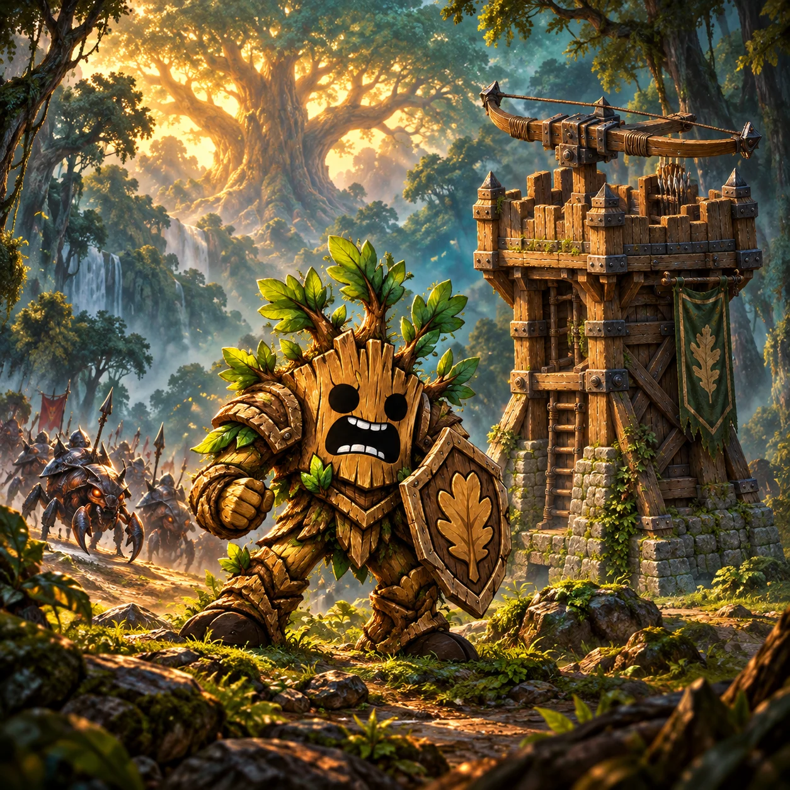
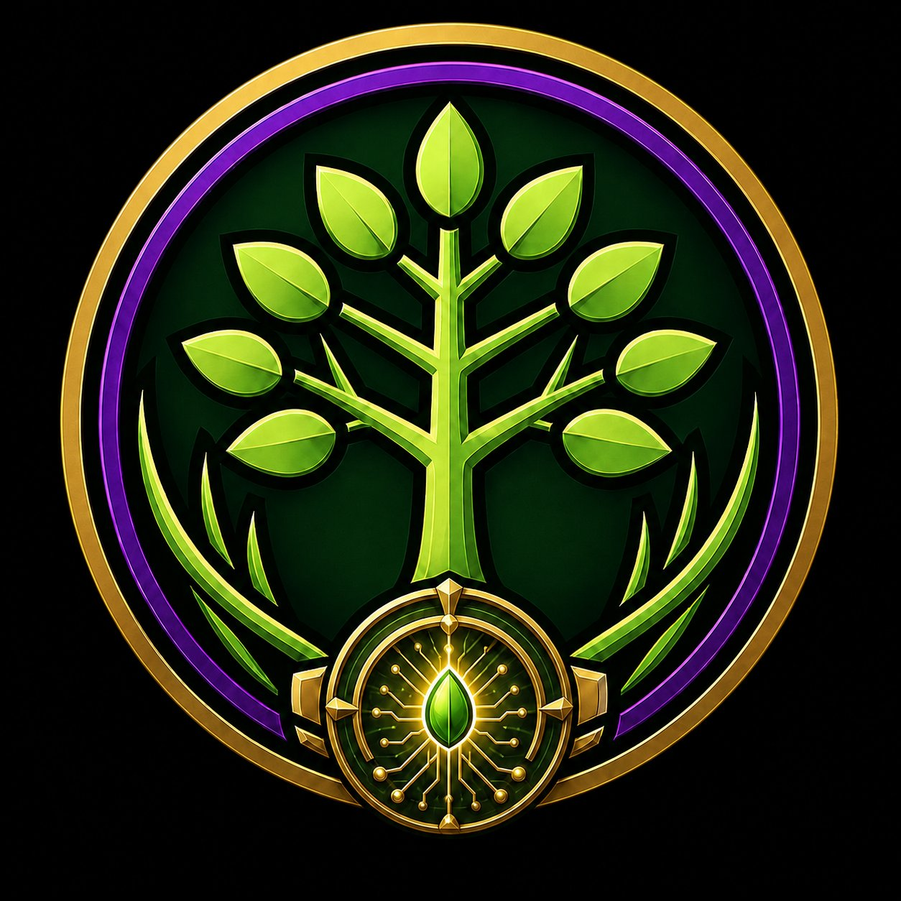
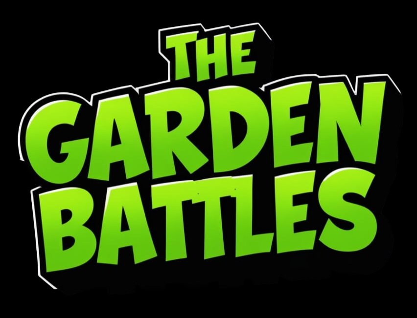
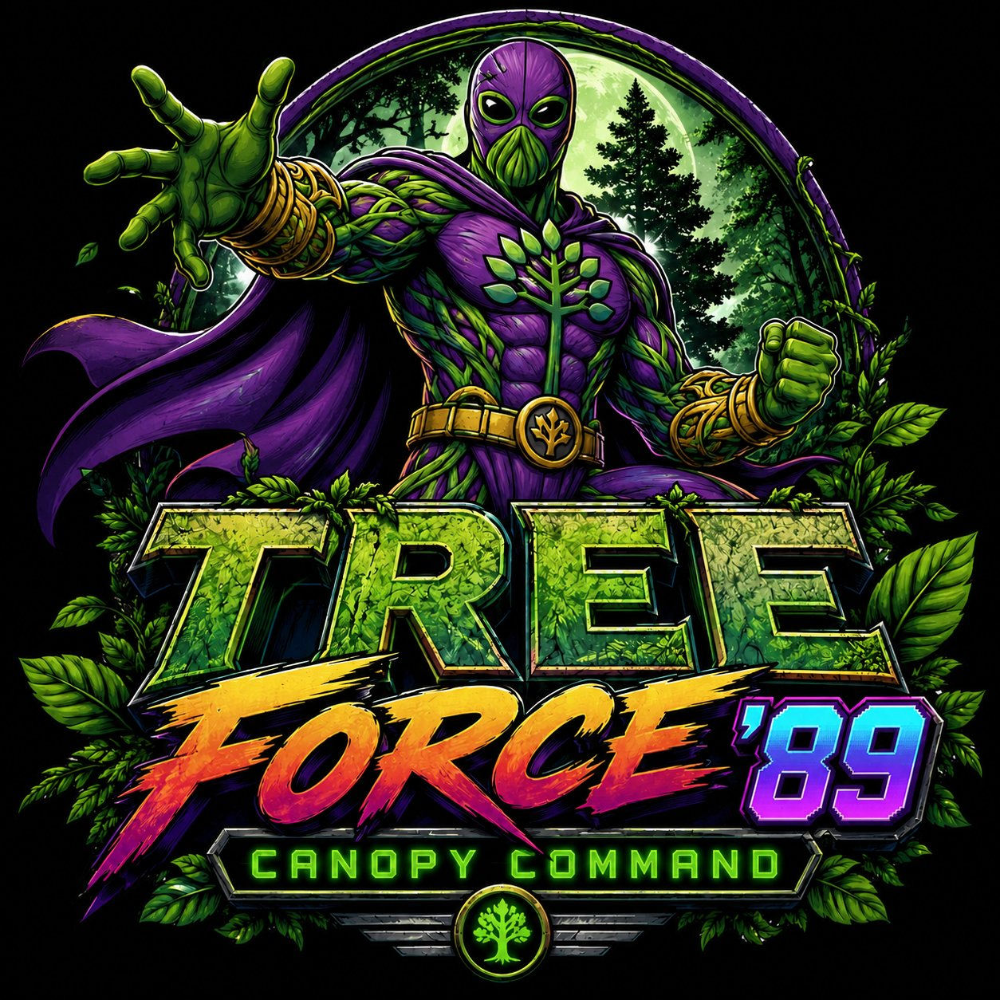

NFTREE · TREE ARCADE
Canopy Defense
Build your forest. Defend the Tree of Life.
03 forests to protect08 defenders to discover✦ seasonal challenges
YOUR FOREST · CAMPAIGN PROGRESSSeedling SanctuaryClear a chapter to build your first landmark.
0 / 9 ★
Choose your level
1–3 Campaign · 4–6 VeteranTREE OF LIFE100 / 100
Root shield: 0
WAVE00 / 10Prepare your forest
SAP EARNED300Plant your defenders
TREE SIMULATED150,000Growth · supplies · continues
SCORE00 pests defeated
EMERALD CROSSINGPATH CLEAR
HOLD THE LINE
Place your guardians, then send the first wave.
BLIGHT KING
Approaching behind the escortBattle report
What broke through
Progress earned
Your next goal
Choose a build site Touch & keyboard controls
FIRST RUN · 1 OF 4
Explore the TREE ecosystem View games +
EXPLORE THE CANOPY
More from the TREE ecosystem.



Purchase history
Recover a recorded payment before creating another. Run supplies and continues belong to the run where they were purchased.